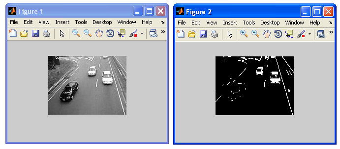
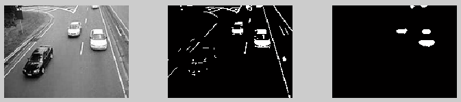
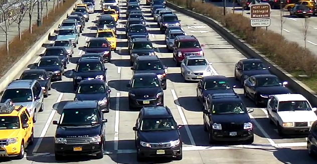

Matlab Tutorial : Video Processing 1 - Object Detection by Color Thresholding
This is based on Detecting Cars in a Video of Traffic. I'm hoping I'll be able to add some values to the reference material.
Let's start from the end. Here is the final output of this chapter. When we play this video, we'll see the white cars are tagged with red marks.
Object detection is one of the major goals in computer vision that deals with detecting instances of semantic objects of a certain class (such as humans, buildings, or cars) in images or videos. Object detection such as face detection and pedestrian detection are among the well-researched domains. Object detection algorithms typically use extracted features and learning algorithms to recognize instances of an object category. Object detection has applications in many areas of computer vision such as image retrieval and video surveillance.
The following models are used for object detection:
- Feature-based object detection :
Detecting a reference object in a cluttered scene using feature extraction and matching. In Matlab, RANSAC can be used to estimate the location of the object in the test image. - Viola-Jones object detection
- SVM classification with histograms of oriented gradients (HOG) features
- Image segmentation and blob analysis
- gradient-based, derivative-based, and template matching approaches.
The input for this tutorial is an avi file that comes with Matlab: traffic.avi.
Matlab provides an API (VideoReader()) for reading in video and create an object that has all the information about the video.
>> obj = VideoReader('traffic.avi')
Summary of Multimedia Reader Object for 'traffic.avi'.
Video Parameters: 15.00 frames per second, RGB24 160x120.
120 total video frames available.
fps = 15 and 120 frames, so the duration is about 8 seconds.
Matlab's get() gives more info:
>> get(obj)
General Settings:
Duration = 8
Name = traffic.avi
Path = C:\Documents and Settings\admin\My Documents\MATLAB\VideoProcessing_1
Tag =
Type = VideoReader
UserData = []
Video Settings:
BitsPerPixel = 24
FrameRate = 15.0000
Height = 120
NumberOfFrames = 120
VideoFormat = RGB24
Width = 160
We can play the view with implay():
implay('traffic.avi');
Let's see the output first:
Here is the code responsible for the output above:
obj = VideoReader('traffic.avi');
darkCar = rgb2gray(read(trafficObj,71));
darkCarValue = 50;
noDarkCar = imextendedmax(darkCar, darkCarValue);
imshow(darkCar)
figure, imshow(noDarkCar)
We have two grayscale pictures from the 71th frame: One for the input, and the other one for the processed image.
The keyword of the process is "threshold". Any pixel that has intensity lower than the threshold will be discarded and processed into black. That's what the imextendedmax(darkCar, darkCarValue) is doing. We chose 50 as the threashold value and it is a little bit above the average intensity of the dark-colored car.
The code done not a bad job. But still we're facing two issues:
- In the processed image, though we removed most of the dark-colored car objects, there are some remnants of the dark car.
- The lane-markings are not touched at all because their pixel values are above the threshold.
The term morphological is a little bit scary but we can think of it as the synonym of geometric or even "size". Any object smaller than the certain size (width OR length) will be discarded. So, not only any small objects from the dark car will be removed but also the bright white colored lane marks will be gone due to the width of the lane is smaller than the "disk".
Let's see what the "morph" has done.
Here is the result after applying the "morph":
Here is the code that produced the pictures above:
obj = VideoReader('traffic.avi');
darkCar = rgb2gray(read(trafficObj,71));
darkCarValue = 50;
noDarkCar = imextendedmax(darkCar, darkCarValue);
sedisk = strel('disk',2);
noSmallStructures = imopen(noDarkCar, sedisk);
subplot(131); imshow(darkCar)
subplot(132); imshow(noDarkCar)
subplot(133); imshow(noSmallStructures)
We removed small objects by comparing the size of our "disk" which is created by the function strel(). The strel() create morphological structuring element such as 'ball', 'square', 'line', etc.
But actually the real worker here is imopen().
Here is the description from Matlab's document regarding imopen():
IM2 = imopen(IM,SE) performs morphological opening on the grayscale or binary image IM with the structuring element SE. The argument SE must be a single structuring element object, as opposed to an array of objects. The morphological open operation is an erosion followed by a dilation, using the same structuring element for both operations.
I've already shown you the result in the beginning of this chapter. But let's see the red-marked white cars again:
So far, we worked with only one frame (71st). Now, we should make the code to work on every frame.
Here is the code:
obj = VideoReader('traffic.avi');
darkCarValue = 50;
darkCar = rgb2gray(read(obj,71));
noDarkCar = imextendedmax(darkCar, darkCarValue);
sedisk = strel('disk',2);
noSmallStructures = imopen(noDarkCar, sedisk);
nframes = get(obj, 'NumberOfFrames');
I = read(obj, 1);
taggedCars = zeros([size(I,1) size(I,2) 3 nframes], class(I));
for k = 1 : nframes
singleFrame = read(obj, k);
% Convert to grayscale to do morphological processing.
I = rgb2gray(singleFrame);
% Remove dark cars.
noDarkCars = imextendedmax(I, darkCarValue);
% Remove lane markings and other non-disk shaped structures.
noSmallStructures = imopen(noDarkCars, sedisk);
% Remove small structures.
noSmallStructures = bwareaopen(noSmallStructures, 150);
% Get the area and centroid of each remaining object in the frame. The
% object with the largest area is the light-colored car. Create a copy
% of the original frame and tag the car by changing the centroid pixel
% value to red.
taggedCars(:,:,:,k) = singleFrame;
stats = regionprops(noSmallStructures, {'Centroid','Area'});
if ~isempty([stats.Area])
areaArray = [stats.Area];
[junk,idx] = max(areaArray);
c = stats(idx).Centroid;
c = floor(fliplr(c));
width = 2;
row = c(1)-width:c(1)+width;
col = c(2)-width:c(2)+width;
taggedCars(row,col,1,k) = 255;
taggedCars(row,col,2,k) = 0;
taggedCars(row,col,3,k) = 0;
end
end
frameRate = get(trafficObj,'FrameRate');
implay(taggedCars,frameRate);
Since the final code is well documented within the code, I'll stop here.
Note: As you may already know we can get the code ifrom Matlab directory. For v.2013b, it is stored at C:\Program Files\MATLAB\R2013b\toolbox\images\imdemos\ipextraffic.m
With other samples, I had couple of issues:
- Getting number of frames for vbr, so I used read(obj, inf); as recommended by Read video frame data from file to get the number of frames.
- Out of memory issue - There is another way as mentioned in the official tutorial, I simply rescaled the video.
- In implay(taggedCars,frameRate), for this sample, I could not get frameRate, so I dropped off from the args.
- Algorithm we made was not general enough and we made it work for specific target. In my sample, I had to increase the size of the 'disk' and the dark color threshold value.
Any way, here is the output:
The input video file for the tracking sample: slowsm2.wmv
Original file with bigger size : slow.mp4
Here is the code for the output above:
obj = VideoReader('slowsm2.wmv');
nframes = read(obj, inf);
darkCarValue = 100;
darkCar = rgb2gray(read(obj,71));
noDarkCar = imextendedmax(darkCar, darkCarValue);
sedisk = strel('disk',4);
noSmallStructures = imopen(noDarkCar, sedisk);
nframes = get(obj, 'NumberOfFrames');
I = read(obj, 1);
taggedCars = zeros([size(I,1) size(I,2) 3 nframes], class(I));
for k = 1 : nframes
singleFrame = read(obj, k);
% Convert to grayscale to do morphological processing.
I = rgb2gray(singleFrame);
% Remove dark cars.
noDarkCars = imextendedmax(I, darkCarValue);
% Remove lane markings and other non-disk shaped structures.
noSmallStructures = imopen(noDarkCars, sedisk);
% Remove small structures.
noSmallStructures = bwareaopen(noSmallStructures, 150);
% Get the area and centroid of each remaining object in the frame. The
% object with the largest area is the light-colored car. Create a copy
% of the original frame and tag the car by changing the centroid pixel
% value to red.
taggedCars(:,:,:,k) = singleFrame;
stats = regionprops(noSmallStructures, {'Centroid','Area'});
if ~isempty([stats.Area])
areaArray = [stats.Area];
[junk,idx] = max(areaArray);
c = stats(idx).Centroid;
c = floor(fliplr(c));
width = 2;
row = c(1)-width:c(1)+width;
col = c(2)-width:c(2)+width;
taggedCars(row,col,1,k) = 255;
taggedCars(row,col,2,k) = 0;
taggedCars(row,col,3,k) = 0;
end
end
frameRate = get(obj,'FrameRate');
% implay(taggedCars,frameRate);
implay(taggedCars);
More things to do to make it work better!
This is another sample I'm planning to work on later:
trafficJam.mp4
Matlab Image and Video Processing Tutorial
- Vectors and Matrices
- m-Files (Scripts)
- For loop
- Indexing and masking
- Vectors and arrays with audio files
- Manipulating Audio I
- Manipulating Audio II
- Introduction to FFT & DFT
- Discrete Fourier Transform (DFT)
- Digital Image Processing 1 - 7 basic functions
- Digital Image Processing 2 - RGB image & indexed image
- Digital Image Processing 3 - Grayscale image I
- Digital Image Processing 4 - Grayscale image II (image data type and bit-plane)
- Digital Image Processing 5 - Histogram equalization
- Digital Image Processing 6 - Image Filter (Low pass filters)
- Video Processing 1 - Object detection (tagging cars) by thresholding color
- Video Processing 2 - Face Detection and CAMShift Tracking
Here is a link to Matlab for Computer Vision Samples : Computer Vision System Toolbox Examples.
Ph.D. / Golden Gate Ave, San Francisco / Seoul National Univ / Carnegie Mellon / UC Berkeley / DevOps / Deep Learning / Visualization